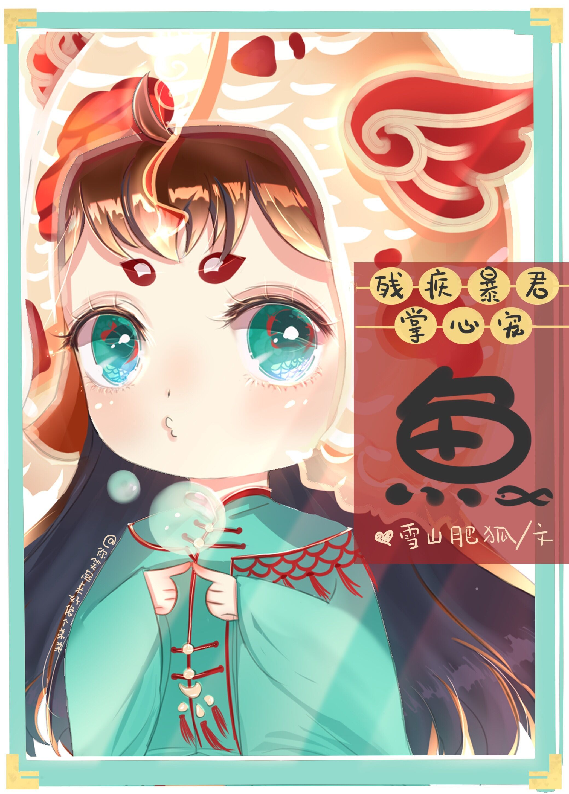

Un día, Li Yu se transformó en un pez. Además, este pez tenía un amo. Este amo era el siniestro y aterrador tirano mudo de una novela. El sistema le encomendó una tarea a Li Yu. Si quería volver a ser humano, debía obtener el corazón del tirano.
Li Yu, lleno de lágrimas: Sistema, despierta. Solo soy un pez. Ni siquiera puede hablar. ¿Cómo podemos interactuar?
Sistema: Deja de parlotear. Para derrotar al tirano, debes atacar su corazón.
Li Yu: ¿Puedo preguntar, el tirano tiene corazón?
Li Yu hizo todo lo posible por hacerle burbujas al tirano, pero terminó siendo capturado por este y criado con esmero en una enorme pecera. La vida de un pez estaba llena de bendiciones.
Todos los días, Mu Tianchi observaba a la pequeña carpa nadar felizmente, preguntándose cuándo este pez finalmente se transformaría en un humano.
La pequeña carpa no lo sabía. No es que el tirano no tuviera corazón, es solo que ya se lo había regalado a la pequeña carpa que accidentalmente le salvó la vida.